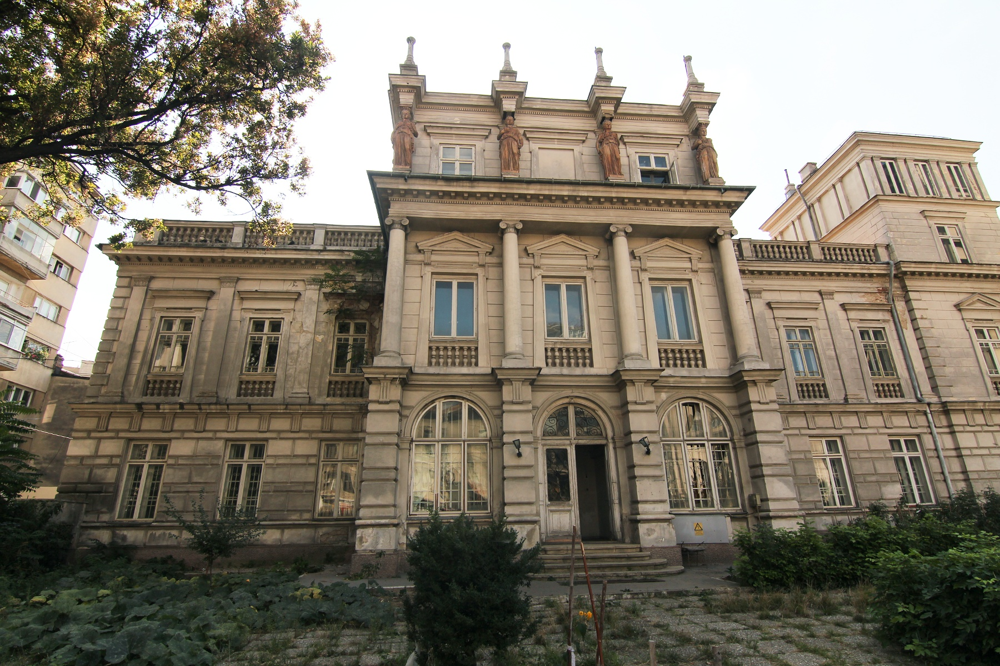

Cladiri in stil gotic
Catedrala Sf. Ștefan
Catedrala din Canterbury
Palatul Știrbei

Muzeul Țăranului Român

Arhitectura gotică reprezintă unul din stilurile arhitecturale asociate cu catedralele, precum și cu alte biserici din aproape toată Europa în timpul perioadei medievale, începând cu secolul al XII-lea și încheind cu anii 1500. Ca o situare mai exactă în timp și spațiu, cele mai importante opere arhitecturale gotice acoperă perioada 1140 - 1500, fiind construite din România până în Portugalia și din Slovenia până în Norvegia, Suedia și Finlanda. A fost precedată de arhitectura romanică și a fost succedată de arhitectura renascentistă, o transformare a stilului romanic, odată cu Renașterea, începută în Florența secolului al XV-lea.
Stilul gotic este o transformare a stilului romanic, apărut din necesitatea de a da o altă dimensiune verticală clădirilor. Goticul flamboaiant, adică goticul târziu, a fost faza de apogeu artistic a goticului care s-a remarcat prin exagerarea abundenței detaliilor, în parte pentru a diminua greutatea pe care clădirile gotice o impuneau, respectiv pentru a încerca o salvare a stilului.
În Anglia, la începutul secolului al 19-lea, goticul cunoaște o re-evaluare și o nouă recunoaștere, de fapt o "renaștere" denumită gotic renăscut sau neo-gotic, producând clădiri memorabile, dintre care Palatul Westminster, care a fost total refăcut după devastatorul incendiu din 1834, este un exemplu memorabil de gothic revival. Mai târziu, la sfârșitul aceluiași secol și începutul secolului 20, arhitectura gotică are o ultimă "tresărire de orgoliu", producând opere durabile, în stilul numit deja atunci neo-gotic.
Stilul gotic își are originea în construcția Bazilicii Sfântul Denis, biserica abației din Saint-Denis, din apropierea Parisului. Bazilicia Saint-Denis a concretizat viziunea arhitecturală a Abatelui Suger. Suger a dorit să creeze o reprezentare fizică a Ierusalimului ceresc printr-o clădire de o verticalitate și liniaritate impunătoare. Fațada bazilicii a fost proiectată efectiv de Suger, în timp ce nava a fost adăugată sute de ani mai târziu.
Către mijlocul secolului al XII-lea, în plină epocă de dominație a romanicului, își face apariția un nou stil în arhitectură. Numele i-a fost dat de oamenii veacului al XVII-lea, care disprețuiau această artă, văzută ca o artă "barbară", "gotică" de la numele celor mai cunoscuți "barbari" ai sfârșitului antichității. În realitate, arta gotică a dat Europei capodopere comparabile cu cele mai mari creații ale geniului uman.
Monumentele romanice le păreau arhitecților secolului al XII-lea greoaie, masive și întunecate, datorită ferestrelor puține și înguste. Arhitecții goticului au revoluționat viziunea spațială romanicului prin două invenții: ogiva și arcul de susținere (arc butant). Bolta semicirculară este înlocuită cu o boltă în formă de arc de cerc frânt, sau ogivă, la care presiunea verticală este mult mai redusă. Meșterii înălțau pe patru coloane, dispuse în plan pătrat, câte două perechi de arcuri în ogivă; fiecare arc este susținut de două coloane diagonal opuse.
Prin multiplicarea acestor grupuri de arcuri se putea obține o construcție foarte solidă, capabilă să susțină, prin încrucișarea de ogive, bolta edificiului, oricare ar fi dimensiunile ei. Arcurile de susținere, cealaltă invenție, sprijină, din exterior, pereții înalți ai navei centrale, alături de contraforturi, pentru a contrabalansa presiunea laterală a bolților. Aceste soluții au îngăduit o nouă organizare a spațiului bisericii, în care planul cu o navă este cel mai răspândit. Una dintre gloriile catedralelor gotice este turnul de înălțime amețitoare, al cărui vârf împunge bolta cerească. Multe catedrale aveau mai multe turnuri, dar unele dintre ele au rămas neterminate din lipsă de fonduri, cum ar fi în Belgia catedrala din Anvers.